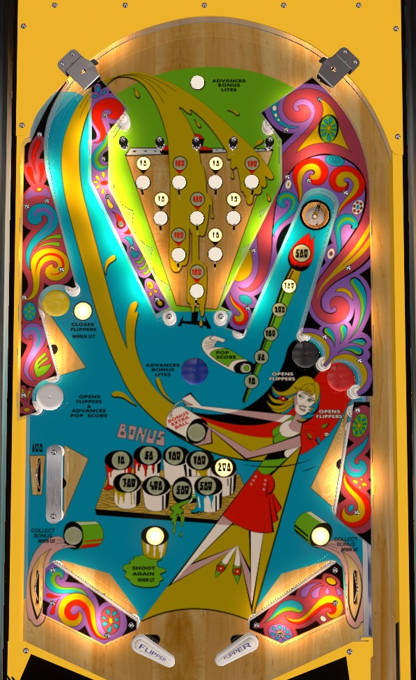

If the right saucer value is high, shoot it to collect; the saucer value is raised by hitting red, black, or white mushroom bumpers. Otherwise: shoot the red mushroom bumper to light the 100 point buttons in the top maze, then shoot the yellow mushroom bumper to zip the flippers together, then shoot up the left lane to the top of the table so that you go through the top maze with 100 point buttons lit as many times as possible.
A plunge or a full left orbit shot ends up in the top maze, a bagatelle-like area with 10 rollover buttons. 5 buttons have black numbers and 5 have red numbers; at any given time, only the buttons with one colour of numbers will be lit. The red number buttons are always lit at the start of the game; shooting the black or red mushroom bumpers on the right side of the playfield switches the selected colour to whichever bumper was hit. All rollover buttons score 10 points when not lit. When black-number buttons are lit, pressing those buttons scores 10 points and advances the Bonus in the center of the playfield. When red-number buttons are lit. pressing those buttons scores 100 points and advances the Bonus. Shots that fall through the top maze when red-number buttons are lit are the only way to consistently score more than 100 points with a single shot on Op-Pop-Pop.
The Bonus starts each ball at 10 points. Advances from the top rollover button, blue mushroom bumper, or lit buttons in the top maze increase the Bonus in the following sequence: 10-50-100-100-200-300-400-500-500-extra ball. (The duplicate numbers in that sequence are not an error; at 100 and 500 points of Bonus, it takes 2 advances to get to a better reward.) Bonus is not automatically collected at the end of the ball; you only score the bonus by draining down a lit out lane. When red-number buttons are lit, the left out lane is lit for Collect Bonus; when black-number buttons are lit, the right out lane is lit for Collect Bonus; if the Bonus is advanced all the way to Extra Ball, both out lanes will be lit for Collect Bonus. No points are awarded for collecting an extra ball from a lit out lane; watch for this if you are playing Op-Pop-Pop in a competition setting where extra balls are disabled, because you wouldn't want to advance your Bonus too far and lose out on 500 points.
The Pop score starts each ball at 10 points. Advancing the value causes it to grow in the sequence 10-50-100-200-300-500 points. Hitting the black or red mushroom bumpers advances the value, but only as high as 100 points. The white mushroom bumper advances the Pop score at any level. Shooting the upper right saucer scores the lit value and resets it back to 10 points.
All mushroom bumpers score 10 points. From left to right:
The white mushroom advances the Pop saucer score and opens the flippers if they have been closed.
The yellow mushroom zips the flippers together if they are open.
The blue mushroom advances the Bonus value.
The black mushroom lights the black-number buttons on the top maze, increases the Pop saucer value if it is less than 100 points, and opens the flippers if they are closed.
The red mushroom lights the red-number buttons on the top maze, increases the Pop saucer value if it is less than 100 points, and opens the flippers if they are closed.
There are no in lanes. Flippers back up directly to the slingshots. 2-inch mini-flippers are used. The flippers can be zipped together, completely and temporarily blocking off the center drain as a reward, as described in the previous section. Out lanes score 0 points if not lit, or the current Bonus when lit. The left out lane is double-height, with the top entrance being near the white mushroom bumper and scoring 100 points.
There is no playfield special, and no way to make extra balls score points.